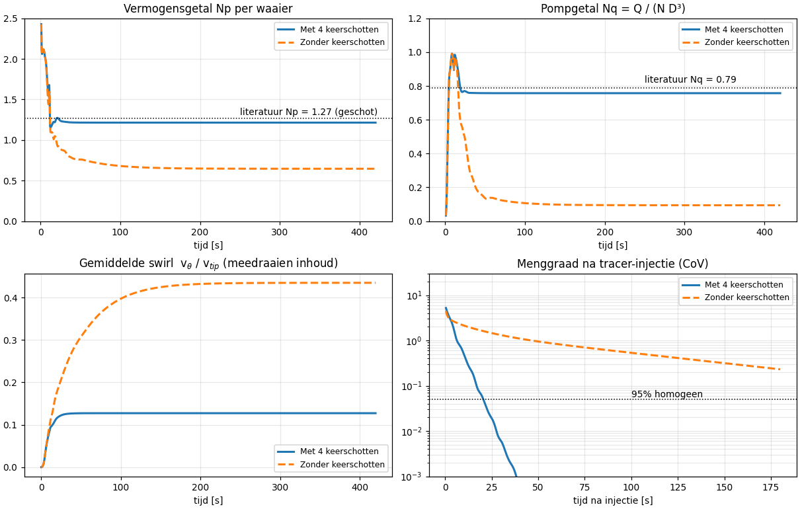
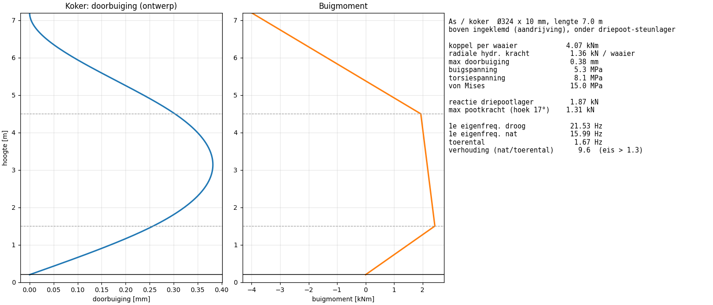

<title>Mengtank Ø4 m – CFD en FEM</title>
<meta name="claude:viewport-fit-sides" content="cover">
<link rel="preconnect" href="https://fonts.googleapis.com">
<link rel="stylesheet" href="https://fonts.googleapis.com/css2?family=Archivo:wdth,wght@75..100,500..800&family=Source+Sans+3:ital,wght@0,400;0,600;1,400&family=JetBrains+Mono:wght@400;600&display=swap">
<style>
/* Layout: één leeskolom als technisch rapport; video's en figuren mogen breder dan de tekst. */
:root {
  --paper: #f2f5f6;
  --sheet: #ffffff;
  --ink: #13222c;
  --muted: #566771;
  --rule: #d3dde2;
  --accent: #0e6f78;
  --good: #217a3c;
  --good-bg: #e3f2e7;
  --bad: #b3261e;
  --bad-bg: #fbe6e4;
  --warn: #9a5b00;
  --warn-bg: #fdf0d8;
  --f-display: "Archivo", "Arial Narrow", "Helvetica Neue", Arial, sans-serif;
  --f-body: "Source Sans 3", "Segoe UI", Helvetica, Arial, sans-serif;
  --f-mono: "JetBrains Mono", Consolas, "Courier New", monospace;
}
@media (prefers-color-scheme: dark) {
  :root:not([data-theme="light"]) {
    --paper: #0f171c; --sheet: #16222a; --ink: #e3ebef; --muted: #9db0ba; --rule: #2a3a44;
    --accent: #4fc1c9; --good: #6fd08c; --good-bg: #143322; --bad: #ff8a80; --bad-bg: #3a1714;
    --warn: #f3b552; --warn-bg: #36280d; color-scheme: dark;
  }
}
:root[data-theme="dark"] {
  --paper: #0f171c; --sheet: #16222a; --ink: #e3ebef; --muted: #9db0ba; --rule: #2a3a44;
  --accent: #4fc1c9; --good: #6fd08c; --good-bg: #143322; --bad: #ff8a80; --bad-bg: #3a1714;
  --warn: #f3b552; --warn-bg: #36280d; color-scheme: dark;
}
* { box-sizing: border-box; }
body {
  background: var(--paper); color: var(--ink); font-family: var(--f-body); font-size: 17px; line-height: 1.55;
  padding-left: max(16px, env(safe-area-inset-left, 0px)); padding-right: max(16px, env(safe-area-inset-right, 0px));
  padding-block: 0 64px;
}
main { max-width: 1040px; margin: 0 auto; display: grid; gap: 56px; }
.prose { max-width: 68ch; }
h1, h2, h3 { font-family: var(--f-display); font-stretch: 82%; text-wrap: balance; line-height: 1.12; margin: 0; }
h1 { font-size: clamp(2rem, 5vw, 3.1rem); font-weight: 800; letter-spacing: -0.01em; }
h2 { font-size: 1.7rem; font-weight: 750; }
h3 { font-size: 1.2rem; font-weight: 700; }
p { margin: 0; }
section { display: grid; gap: 18px; }
.eyebrow { font-family: var(--f-mono); font-size: 0.75rem; letter-spacing: 0.08em; text-transform: uppercase; color: var(--accent); }
.num { font-family: var(--f-mono); font-variant-numeric: tabular-nums; }
.muted { color: var(--muted); }
small, .small { font-size: 0.88rem; }

header.top { padding-block: 48px 8px; display: grid; gap: 14px; border-bottom: 2px solid var(--ink); padding-bottom: 24px; }
.spec { display: flex; flex-wrap: wrap; gap: 6px 22px; font-family: var(--f-mono); font-size: 0.82rem; color: var(--muted); }
.spec b { color: var(--ink); font-weight: 600; }

.verdict { display: grid; grid-template-columns: repeat(auto-fit, minmax(280px, 1fr)); gap: 16px; }
.card { background: var(--sheet); border: 1px solid var(--rule); border-radius: 6px; padding: 20px 22px; display: grid; gap: 10px; align-content: start; min-width: 0; }
.card.good { border-top: 5px solid var(--good); }
.card.bad { border-top: 5px solid var(--bad); }
.pill { display: inline-block; font-family: var(--f-mono); font-size: 0.75rem; font-weight: 600; padding: 2px 9px; border-radius: 99px; letter-spacing: 0.04em; }
.pill.good { color: var(--good); background: var(--good-bg); }
.pill.bad { color: var(--bad); background: var(--bad-bg); }
.pill.warn { color: var(--warn); background: var(--warn-bg); }
.big { font-family: var(--f-display); font-stretch: 80%; font-size: 2.6rem; font-weight: 800; line-height: 1; }
.big small { font-size: 1rem; font-weight: 600; color: var(--muted); font-family: var(--f-body); }
.card ul { margin: 0; padding-left: 1.1em; display: grid; gap: 4px; }

.steps { list-style: none; margin: 0; padding: 0; display: grid; gap: 0; counter-reset: s; }
.steps li { counter-increment: s; display: grid; grid-template-columns: 44px 1fr; gap: 14px; padding: 14px 0; border-top: 1px solid var(--rule); }
.steps li::before { content: counter(s); font-family: var(--f-mono); font-weight: 600; color: var(--accent); font-size: 1.1rem; }
.steps li > div { display: grid; gap: 4px; min-width: 0; }

figure { margin: 0; display: grid; gap: 8px; min-width: 0; }
figure video, figure img { width: 100%; max-width: 100%; height: auto; display: block; border-radius: 4px; border: 1px solid var(--rule); background: #fff; }
figcaption { font-size: 0.9rem; color: var(--muted); max-width: 90ch; }
figcaption b { color: var(--ink); }

.tbl { overflow-x: auto; }
table { border-collapse: collapse; width: 100%; font-size: 0.93rem; }
th, td { text-align: left; padding: 7px 12px 7px 0; border-bottom: 1px solid var(--rule); vertical-align: top; }
th { font-family: var(--f-mono); font-size: 0.72rem; text-transform: uppercase; letter-spacing: 0.07em; color: var(--muted); font-weight: 600; }
td.n { font-family: var(--f-mono); font-variant-numeric: tabular-nums; white-space: nowrap; }

.two { display: grid; grid-template-columns: repeat(auto-fit, minmax(300px, 1fr)); gap: 28px; align-items: start; }
.note { border-left: 3px solid var(--accent); padding: 4px 0 4px 16px; color: var(--muted); }
code { font-family: var(--f-mono); font-size: 0.85em; background: var(--sheet); border: 1px solid var(--rule); padding: 1px 5px; border-radius: 3px; }
pre { font-family: var(--f-mono); font-size: 0.82rem; background: var(--sheet); border: 1px solid var(--rule); border-radius: 4px; padding: 14px; overflow-x: auto; margin: 0; }
a { color: var(--accent); }
@media (prefers-reduced-motion: reduce) { video { animation: none; } }
</style>

<main>
<header class="top">
  <span class="eyebrow">Methodiek-voorbeeld · stromingsberekening en sterkte</span>
  <h1>Mengtank Ø4 m met dubbele 45°-roerder</h1>
  <p class="prose muted">Mengt de tank goed, en houden de schoepen en de as het? Deze studie loopt de hele keten door: stroming (CFD), menging, belasting op de schoepen, spanningen (FEM), eigenfrequenties en de onderste driepoot-lagering. Medium voorlopig water.</p>
  <div class="spec">
    <span>tank <b>Ø4,0 × 7,2 m</b> (gevuld, gesloten)</span>
    <span>as <b>koker Ø324×10, 7 m</b></span>
    <span>roerder <b>2 × 4 schoepen, Ø1,5 m, 45° neerwaarts</b></span>
    <span>toerental <b>100 omw/min</b></span>
    <span>onderlager <b>driepoot</b></span>
    <span>Re <b>3,7·10⁶</b> (volledig turbulent)</span>
  </div>
</header>

<section>
  <span class="eyebrow">Conclusie</span>
  <h2>Mengt het goed? Alleen met keerschotten.</h2>
  <div class="verdict">
    <div class="card good">
      <span><span class="pill good">GOED</span></span>
      <h3>Met 4 keerschotten (T/12)</h3>
      <div class="big num">21 s <small>tot 95% homogeen</small></div>
      <ul>
        <li>Eén grote circulatielus: omlaag langs de as, omhoog langs de wand</li>
        <li>Pompgetal Nq = <span class="num">0,76</span>, vermogen <span class="num">85 kW</span> (<span class="num">0,94 kW/m³</span>)</li>
        <li>Inhoud draait nauwelijks mee (swirl <span class="num">13%</span> van tipsnelheid)</li>
      </ul>
    </div>
    <div class="card bad">
      <span><span class="pill bad">SLECHT</span></span>
      <h3>Zonder keerschotten</h3>
      <div class="big num">≈ 330 s <small>tot 95% homogeen (geëxtrapoleerd)</small></div>
      <ul>
        <li>Hele inhoud gaat meedraaien (swirl <span class="num">44%</span>), schoepen "roeren in meedraaiend water"</li>
        <li>Pompdebiet stort in: Nq = <span class="num">0,09</span> (−88%)</li>
        <li>Tank valt uiteen in een boven- en onderzone; na 3 min nog CoV = <span class="num">0,23</span></li>
      </ul>
    </div>
  </div>
  <div class="verdict">
    <div class="card">
      <span><span class="pill good">STATISCH OK</span> <span class="pill good">VERMOEIING OK BIJ 20 MM</span></span>
      <h3>Schoep 300 × 530 × 20 mm, RVS 316L</h3>
      <p>Met 15 mm voldeed de schoep niet op vermoeiing (<span class="num">48</span> tegen <span class="num">39 MPa</span> toelaatbaar). Met <b>20 mm</b> is de spanningswisseling aan de lasvoet <span class="num">27 MPa</span>, een benutting van <span class="num">70%</span> (FAT71, oneindige levensduur). Ontwerpspanning <span class="num">71 MPa</span>, veiligheid <span class="num">3,1</span> op de vloeigrens.</p>
    </div>
    <div class="card">
      <span><span class="pill good">OK</span></span>
      <h3>As en driepoot-onderlager</h3>
      <p>Doorbuiging koker <span class="num">0,4 mm</span>, von Mises <span class="num">15 MPa</span>. Eerste eigenfrequentie (in water) <span class="num">16 Hz</span>, ruim 9× boven het toerental van <span class="num">1,67 Hz</span>. Driepootlager krijgt <span class="num">1,9 kN</span> radiaal, max. <span class="num">1,3 kN</span> per poot.</p>
    </div>
  </div>
</section>

<section>
  <span class="eyebrow">Werkwijze</span>
  <h2>De rekenketen</h2>
  <p class="prose">Elke stap levert de invoer voor de volgende. Alle aannames staan op één plek in <code>config.py</code>; aanpassen en opnieuw draaien geeft een nieuwe doorrekening. Voorbeeld: de schoepdikte is na de eerste ronde van 15 naar 20 mm gegaan. Dat raakt alleen stap 5 en 6, de stroming verandert er niet door.</p>
  <ol class="steps">
    <li><div><h3>Stromingsmodel (CFD)</h3><p class="prose">2D-axisymmetrisch RANS-model (radiaal, axiaal en de draaiende component) op een rooster van 4 cm, 8.280 cellen. Turbulentie met een menglengtemodel, wandfuncties op alle wanden, gesloten deksel.</p></div></li>
    <li><div><h3>Roerder als schoepelement-model</h3><p class="prose">Elke schoep is een vlakke plaat onder 45°. Per straal wordt uit de lokale stroming de aanstroomhoek bepaald en daaruit de normaalkracht. Die kracht gaat als bron in de stroming, en wordt meteen bewaard als belasting voor de FEM. Keerschotten en driepoot zijn als weerstand in het model opgenomen.</p></div></li>
    <li><div><h3>Kalibratie en controle</h3><p class="prose">De krachtcoëfficiënt is één keer ingesteld op het literatuur-vermogensgetal van een 4-blads 45°-roerder (Np ≈ 1,27). Het pompgetal en de mengtijd zijn daarna onafhankelijke controles.</p></div></li>
    <li><div><h3>Opstart en menging</h3><p class="prose">Softstart in 5 s, 240 s doorrekenen tot een stabiel stromingsbeeld, dan een tracer onder het deksel bij de wand injecteren (ongunstigste plek) en 180 s volgen. Menggraad = variatiecoëfficiënt (CoV) van de concentratie over het hele volume.</p></div></li>
    <li><div><h3>FEM schoep</h3><p class="prose">3D-volumemodel met 4.608 kwadratische tetraëders (24.375 vrijheidsgraden), ingeklemd aan de las. Belasting is de CFD-krachtverdeling over de straal, lineair over de koorde, plus centrifugaalkracht. Daarna een eigenfrequentie-analyse, droog en met meebewegend water.</p></div></li>
    <li><div><h3>As en driepoot</h3><p class="prose">Balkmodel van de koker: boven ingeklemd in de aandrijving, onder scharnierend in het driepoot-steunlager. Belasting is het koppel uit de CFD en een radiale hydraulische kracht per waaier. Uitkomst: spanning, doorbuiging, lager- en pootkrachten en het kritisch toerental.</p></div></li>
  </ol>
</section>

<section>
  <span class="eyebrow">Stap 1–3 · Stroming</span>
  <h2>Hoe het stromingspatroon zich opbouwt</h2>
  <figure>
    <video src="animaties/stroming_opstart.mp4" poster="animaties/stroming_eindtoestand.png" controls loop muted playsinline preload="metadata"></video>
    <figcaption><b>Opstart, eerste 90 s.</b> Links de meridionale snelheid met stroomlijnen, rechts hoe hard de inhoud meedraait. Met keerschotten ontstaat binnen ~20 s één krachtige lus die de hele 7,2 m hoogte bestrijkt. Zonder keerschotten gaat de inhoud steeds harder meedraaien en blijven alleen zwakke, losse wervels over.</figcaption>
  </figure>
  <figure>
    
    <figcaption><b>Tijdreeksen.</b> Het vermogensgetal zakt zonder keerschotten van 1,21 naar 0,65 en het pompgetal van 0,76 naar 0,09: de roerder levert minder vermogen en dat vermogen gaat vooral in ronddraaien zitten, niet in verticaal transport.</figcaption>
  </figure>
  <div class="tbl">
    <table>
      <thead><tr><th>Grootheid</th><th>Met keerschotten</th><th>Zonder</th><th>Controle / literatuur</th></tr></thead>
      <tbody>
        <tr><td>Vermogensgetal Np per waaier</td><td class="n">1,21</td><td class="n">0,65</td><td>1,27 (kalibratie, 4-blads 45°, W/D = 0,2)</td></tr>
        <tr><td>Pompgetal Nq</td><td class="n">0,76</td><td class="n">0,09</td><td>0,79 (onafhankelijke controle, −4%)</td></tr>
        <tr><td>As-vermogen totaal</td><td class="n">85 kW</td><td class="n">45 kW</td><td></td></tr>
        <tr><td>Askoppel totaal</td><td class="n">8,1 kNm</td><td class="n">4,3 kNm</td><td></td></tr>
        <tr><td>Gemiddelde swirl v<sub>θ</sub>/v<sub>tip</sub></td><td class="n">0,13</td><td class="n">0,44</td><td>v<sub>tip</sub> = 7,85 m/s</td></tr>
        <tr><td>Mengtijd t<sub>95</sub> (CoV &lt; 5%)</td><td class="n">21 s</td><td class="n">≈ 330 s</td><td>Grenville-correlatie: 28 s</td></tr>
      </tbody>
    </table>
  </div>
</section>

<section>
  <span class="eyebrow">Stap 4 · Menging</span>
  <h2>Van injectie naar homogeen</h2>
  <figure>
    <video src="animaties/menging_tracer.mp4" poster="animaties/menging_eindtoestand.png" controls loop muted playsinline preload="metadata"></video>
    <figcaption><b>Tracer onder het deksel bij de wand, 180 s gevolgd.</b> Kleur 1,0 is de eindconcentratie. Met keerschotten is de wolk na ~10 s door de hele tank gesleept en na 21 s binnen 5% homogeen. Zonder keerschotten blijft de bovenste helft rijk en de onderste arm: de waaiers pompen nauwelijks nog verticaal. De rode rondjes zijn de monitorpunten uit de grafiek rechtsonder.</figcaption>
  </figure>
  <figure>
    <video src="animaties/deeltjes_3d.mp4" controls loop muted playsinline preload="metadata"></video>
    <figcaption><b>3D-deeltjesbanen.</b> 2.500 deeltjes in het stabiele stromingsveld, inclusief turbulente verspreiding. Oranje start in de bovenste helft, blauw in de onderste. Volledig gemengd betekent 50% oranje in de onderste helft. Met keerschotten is dat na ~15 s bereikt; zonder keerschotten is het na 90 s pas 32%: de deeltjes draaien vooral rond en wisselen nauwelijks tussen boven en onder. (De schoepen zijn vertraagd getekend.)</figcaption>
  </figure>
</section>

<section>
  <span class="eyebrow">Stap 5 · Schoep</span>
  <h2>Spanning en eigenfrequenties van de schoep</h2>
  <figure>
    <video src="animaties/schoep_spanning.mp4" poster="animaties/schoep_spanning.png" controls loop muted playsinline preload="metadata"></video>
    <figcaption><b>Von Mises-spanning bij ontwerpbelasting, 20 mm plaat</b> (1,5× gemiddeld), vervorming 15× overdreven, belasting pulserend ±30%. Kleurschaal vast op 0–130 MPa, gelijk aan de eerdere 15 mm-berekening. De hoogste spanning zit aan de las bij de naaf, midden op de koorde. Rechtsonder de krachtverdeling uit de CFD: die neemt toe met de straal (∝ r²) en is maximaal vlak voor de tip.</figcaption>
  </figure>
  <div class="two">
    <div class="tbl">
      <table>
        <thead><tr><th>Schoep, onderste waaier</th><th>15 mm</th><th>20 mm</th></tr></thead>
        <tbody>
          <tr><td>Normaalkracht per schoep (gemiddeld)</td><td class="n">2,55 kN</td><td class="n">2,55 kN</td></tr>
          <tr><td>Moment aan de wortel</td><td class="n">0,90 kNm</td><td class="n">0,90 kNm</td></tr>
          <tr><td>Nominale buigspanning (balktheorie)</td><td class="n">80 MPa</td><td class="n">45 MPa</td></tr>
          <tr><td>FEM piek von Mises, ontwerp ×1,5</td><td class="n">126 MPa</td><td class="n">71 MPa</td></tr>
          <tr><td>Veiligheid op vloeigrens 316L (220 MPa)</td><td class="n">1,74</td><td class="n">3,10</td></tr>
          <tr><td>Spanningswisseling lasvoet (±30%)</td><td class="n">48 MPa</td><td class="n">27 MPa</td></tr>
          <tr><td>Toelaatbaar FAT71, oneindig (Δσ<sub>D</sub>/1,35)</td><td class="n">39 MPa</td><td class="n">39 MPa</td></tr>
          <tr><td>Benutting vermoeiing</td><td class="n"><span class="pill bad">124%</span></td><td class="n"><span class="pill good">70%</span></td></tr>
          <tr><td>Tipuitbuiging</td><td class="n">4,2 mm</td><td class="n">1,8 mm</td></tr>
          <tr><td>1e eigenfrequentie droog / nat</td><td class="n">44 / 26 Hz</td><td class="n">59 / 38 Hz</td></tr>
        </tbody>
      </table>
    </div>
    <div class="prose" style="display:grid;gap:12px">
      <p><b>Waarom vermoeiing beslist.</b> Bij 100 omw/min ziet elke schoep 1,4·10⁵ lastwisselingen per dag, dus 5·10⁷ per jaar. Dan telt niet de piek, maar de wisseling aan de las. De buigspanning schaalt met 1/t²: van 15 naar 20 mm geeft 44% minder spanning.</p>
      <p><b>Eigenfrequentie.</b> Met 20 mm is de eerste buigvorm 59 Hz droog, ongeveer 38 Hz in water. De aanstoting door schoep- en keerschotpassage is 6,7 Hz: factor 5,6 marge, geen resonantie.</p>
      <p class="note small">De ±30%-fluctuatie is een aanname voor turbulente PBT-belasting. Met 20 mm voldoet de schoep tot een fluctuatie van ±43%. Dit getal is het eerste dat met een transiënte 3D-berekening of rekstrookmeting onderbouwd moet worden.</p>
    </div>
  </div>
  <figure>
    <video src="animaties/schoep_eigenmodes.mp4" poster="animaties/schoep_eigenmodes.png" controls loop muted playsinline preload="metadata"></video>
    <figcaption><b>Eerste vier eigenvormen</b> van de ingeklemde schoep: buiging, torsie, tweede buiging en een combinatie. Alle ver boven de aanstotingsfrequenties.</figcaption>
  </figure>
</section>

<section>
  <span class="eyebrow">Stap 6 · As en driepoot</span>
  <h2>Koker en onderste steunlager</h2>
  <figure>
    
    <figcaption><b>Koker Ø324×10 mm over 7 m.</b> Beide waaiers met hun radiale hydraulische kracht in dezelfde richting (ongunstigst), ×1,5. Het grootste moment zit boven bij de inklemming in de aandrijving (4,1 kNm). Het driepootlager neemt 1,9 kN op; de poten staan vlak (17°), waardoor de pootkracht vooral horizontaal is.</figcaption>
  </figure>
</section>

<section>
  <span class="eyebrow">Grenzen van dit model</span>
  <h2>Wat dit voorbeeld wel en niet zegt</h2>
  <div class="two">
    <div class="prose" style="display:grid;gap:10px">
      <p><b>Betrouwbaar voor:</b> het stromingsbeeld, het verschil met en zonder keerschotten, de orde van mengtijd en vermogen, en de gemiddelde schoepbelasting. Vermogens- en pompgetal en mengtijd liggen binnen 5–25% van literatuurwaarden.</p>
      <p><b>Niet in dit model:</b> 3D-effecten zoals tipwervels en de werkelijke vorm van de keerschotten, het tijdsafhankelijke karakter van de schoepkracht, een vrij vloeistofoppervlak met trechtervorming, en de echte lasgeometrie. De onderste waaier is zwaarder belast dan de bovenste (2,7 vs 2,0 kN); dat zit in het model.</p>
    </div>
    <div class="prose" style="display:grid;gap:10px">
      <p><b>Logische vervolgstappen</b></p>
      <ul style="margin:0;padding-left:1.1em;display:grid;gap:4px">
        <li>3D transiënte CFD met draaiend rooster (OpenFOAM of Ansys Fluent, k-ω SST) voor de krachtfluctuatie per schoep</li>
        <li>Echt product: viscositeit en dichtheid, eventueel vaste stof (zweefsnelheid)</li>
        <li>FEM van de naaf-schoepverbinding met lasdetail, hot-spot-methode</li>
        <li>Stijfheid van aandrijving en tankdak meenemen in het kritisch toerental</li>
        <li>Validatie met vermogensmeting op de motor en een eenvoudige tracerproef</li>
      </ul>
    </div>
  </div>
</section>

<section>
  <span class="eyebrow">Opnieuw doorrekenen</span>
  <h2>Scripts</h2>
  <p class="prose">Alles staat in <code>D:\elrotec\cfd</code>. Pas <code>config.py</code> aan (geometrie, toerental, aantal waaiers, keerschotten, plaatdikte) en draai de keten. Rekentijd op deze laptop: circa 6 minuten per CFD-variant.</p>
  <pre>python cfd_axisym.py geschot
python cfd_axisym.py ongeschot
python fem_blade.py
python shaft_beam.py
python fig_summary.py
python anim_cfd.py
python anim_fem.py</pre>
</section>
</main>
